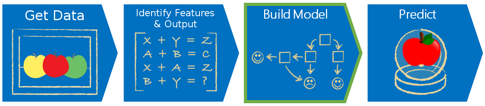

Theory and Standards

All programs that “learn” are typically referred to as “models.” Any model will have at least two stages before it can be applied in an engineering setting: a training stage, also known as a “fitting” stage, where the model is given a training dataset to learn patterns on, and a testing stage, where the performance of the model is tested on previously unseen data. Each method will have it’s own logic for what training and testing explicitly entails, no two are alike.
Many machine learning authorities and resources will talk about a validation stage. Validation means different things to different people. ‘Validation’ can be synonymous with ‘testing,’ the way we used it above, but can also refer to the process of holding out sections of training data to test on with different configurations of some model. In this way, we are ‘validating’ sets of hyper-parameters, or deciding what configuration is ideal.
Hyper-parameters refers to user specified inputs that the algorithm keeps and uses for certain steps. They are separate from parameters, which are values internal to the algorithm that are changed or updated as part of the algorithms natural progression. An example of a hyper-parameter is the number of clusters, or categories, you’d like some method to find. An example of a parameter is a set of numbers that define a boundary, that changes as your model trains.